AI for Visual Analysis
Wednesday, June 10, 2026 · 10 AM – noon · CHDR
Part 1
Image generation (text-to-image) versus image analysis (image-to-text, alt-text, multi-image comparison). Most people think of generation when they think of AI — but both are forms of data visualization, and that is the lens we want students to bring to each.
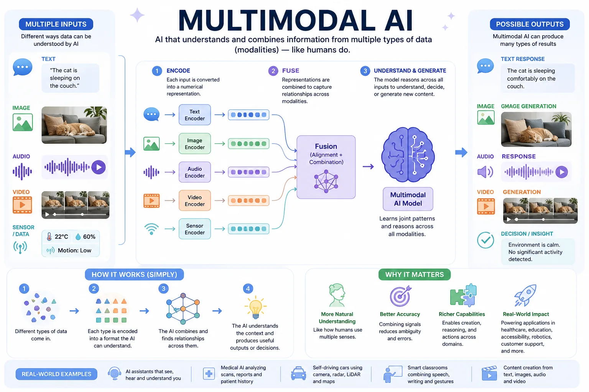
Multimodal AI in one diagram — every input type meets in a shared representation, then comes back out as any output type. Generated with ChatGPT Images 2.0.
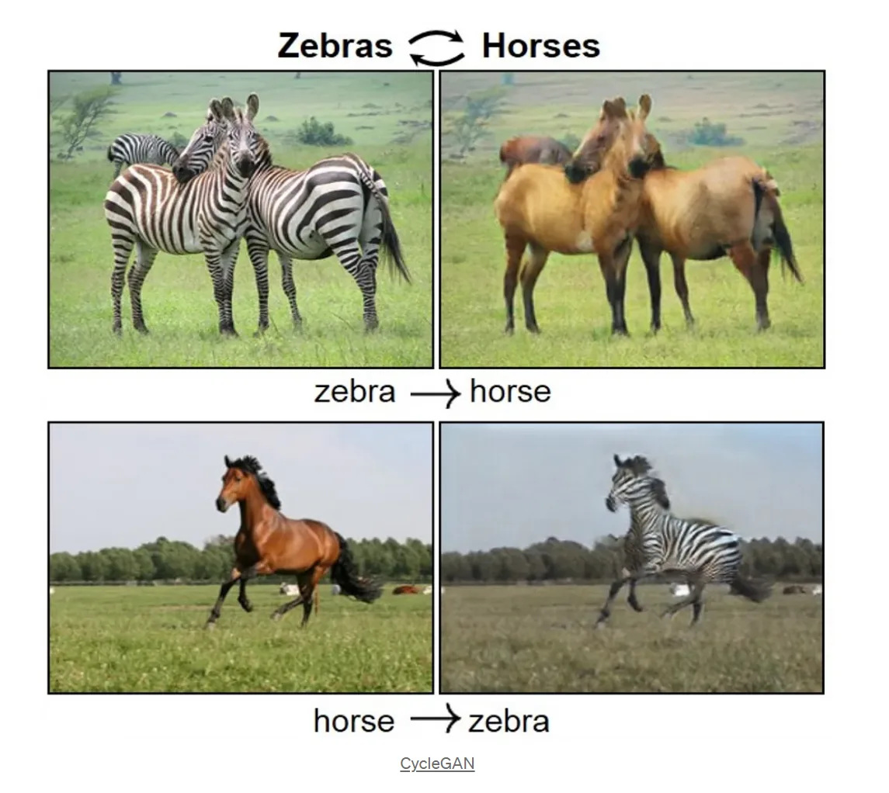
Part 2
Every generated image is a picture of the training data — a visualization of what the model has seen, and of whose world it treats as the default.
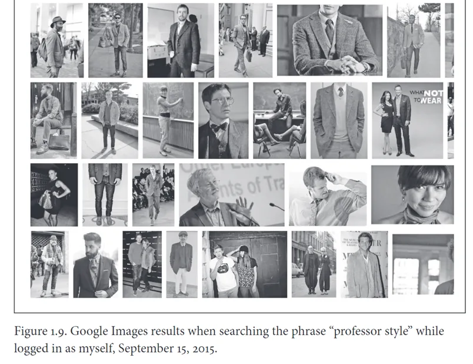
Safiya Noble, Algorithms of Oppression — a search engine's idea of a 'professor.'
What we find in search engines about people and culture is important. They oversimplify complex phenomena. They obscure any struggle over understanding, and they can mask history. Search results can reframe our thinking and deny us the ability to engage deeply with essential information and knowledge we need, knowledge that has traditionally been learned through teachers, books, history, and experience. Search results, in the context of commercial advertising companies, lay the groundwork, as I have discussed throughout this book, for implicit bias: bias that is buttressed by advertising profits.
— Safiya Noble, Algorithms of Oppression
Ask for 'a professor' twice and you get the same man. Generated with ChatGPT Images 2.0.
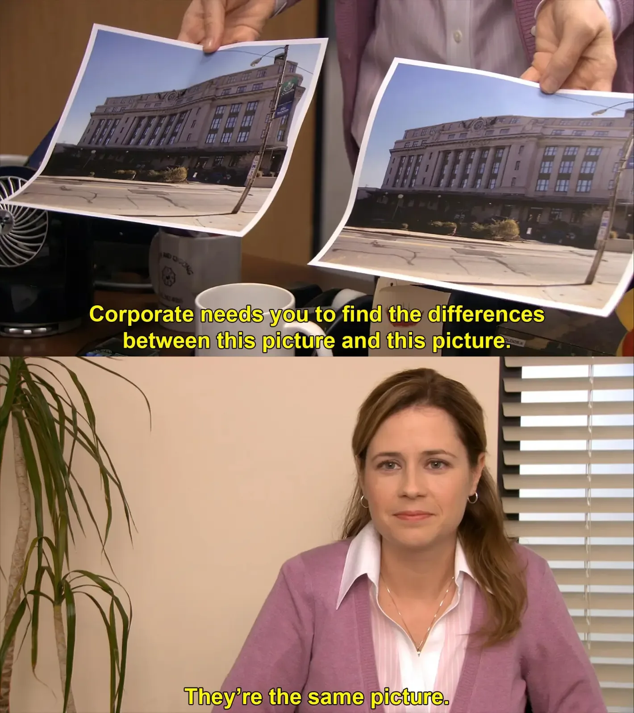
The reference: the original 'They're the same picture' meme.
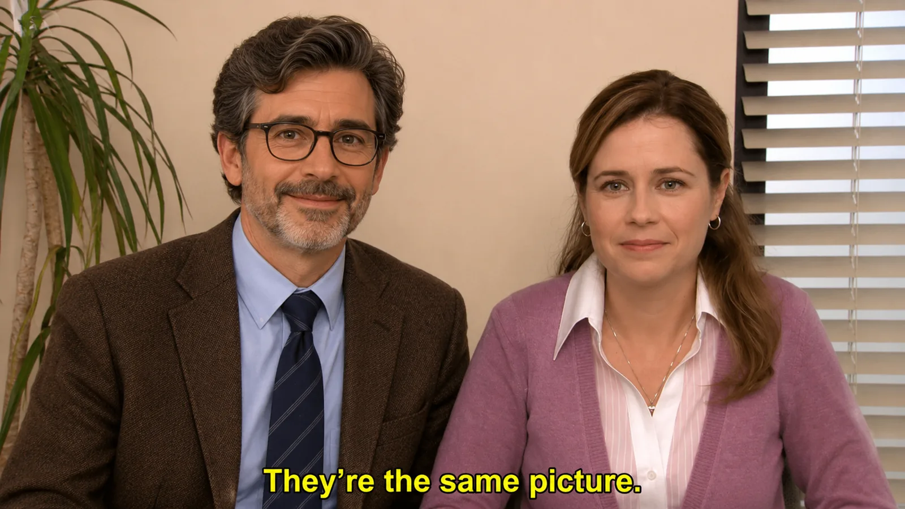
Ask ChatGPT Images 2.0 to remake the meme and the joke collapses — it keeps the punchline but loses the premise.
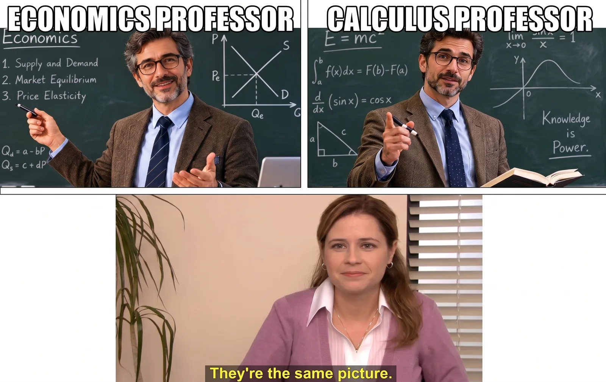
Gemini (Nano Banana 2) gets closer to the meme's structure — and makes the same point about sameness.
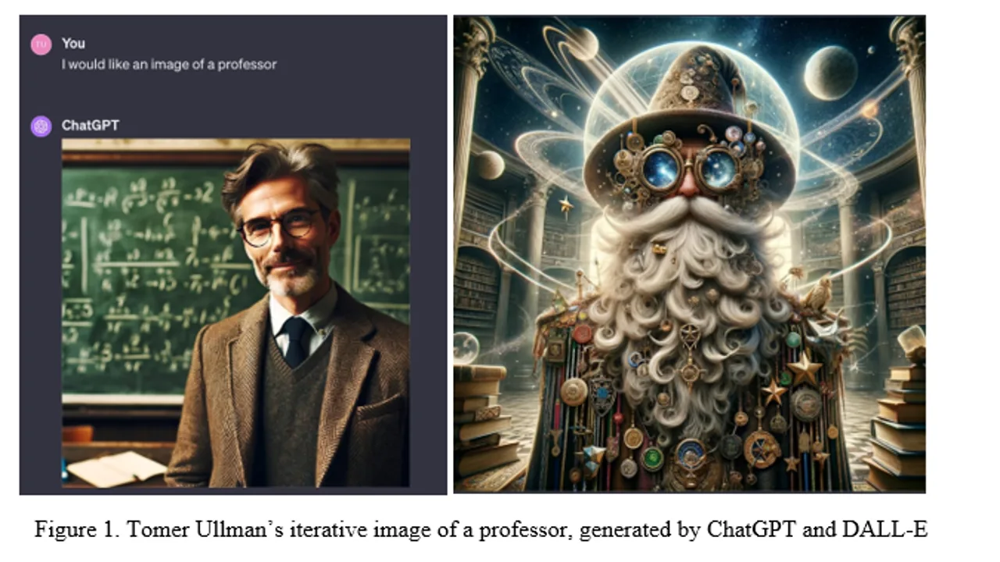
Tomer Ullman's iterative 'professor,' generated by ChatGPT and DALL-E — what 'more' looks like when you keep pushing.
Exercise
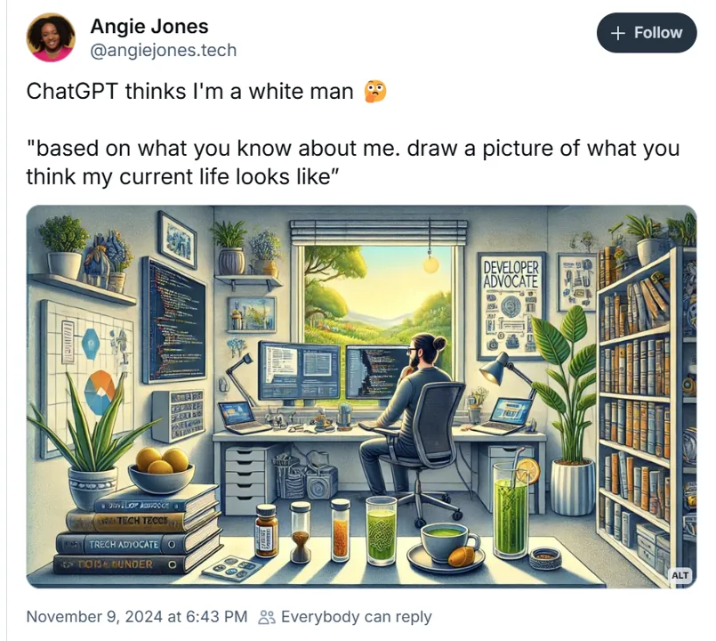
Angie Jones: 'ChatGPT thinks I'm a white man.'
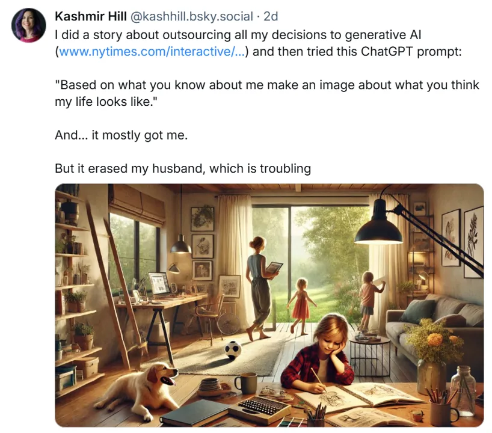
Kashmir Hill: 'But it erased my husband, which is troubling.'
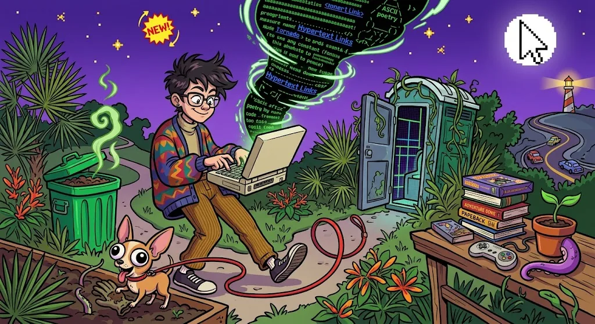
The same prompt, run on what the tools 'know' about me — Claude and Gemini.
Exercise
Using a generative AI tool that you have relied upon for life, work, or class experiments in the past, try the prompt:
Based on what you know about me, draw a picture of what you think my current life looks like.
Datasets aren't simply raw materials to feed algorithms, but are political interventions. As such, much of the discussion around 'bias' in AI systems misses the mark: there is no 'neutral,' 'natural,' or 'apolitical' vantage point that training data can be built upon.
— Crawford & Paglen, Excavating AI
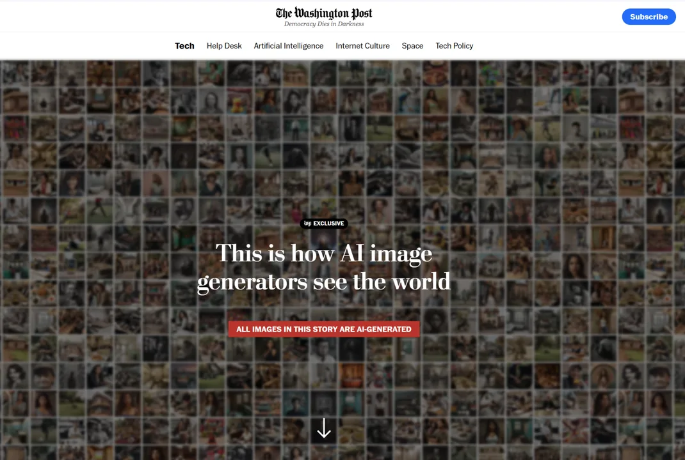
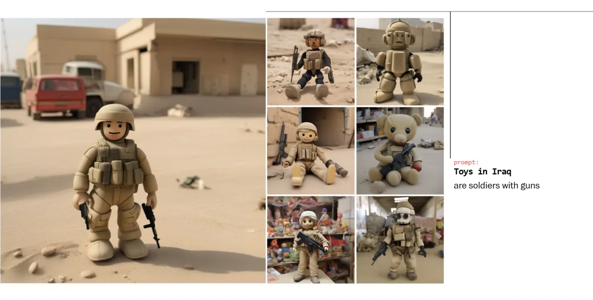
'Toys in Iraq' → soldiers with guns. The dataset's assumptions, made visible.
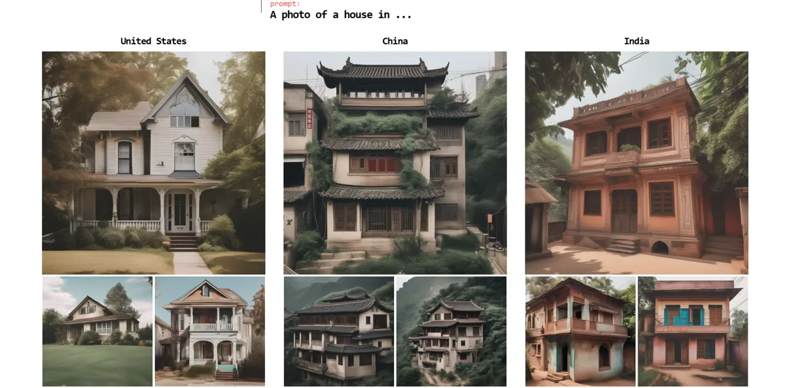
'A photo of a house,' by country — each a composite of what the model assumes.
Exercise
Part 3
From generation to analysis: turning a set of images into structured description, metadata, and a visualization you can interrogate.
Exercise
Using your five-to-ten image set:
Exercise
Try the same thing, but with Claude Cowork if you have access.
Part 4
Where does this fit in your teaching? An accessibility tool? A scaffolded close-reading exercise? An archival metadata workflow? All three?
AI vision can be a real accessibility tool or a fluent way to flatten archives into stereotype. The difference is the human in the loop.